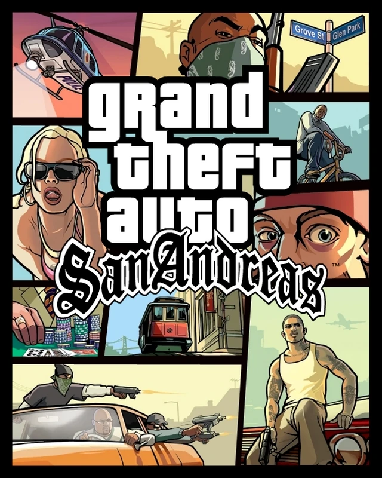
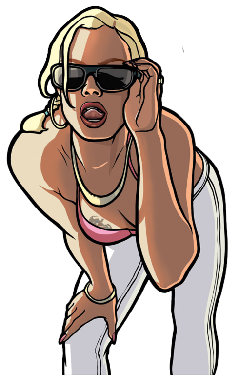
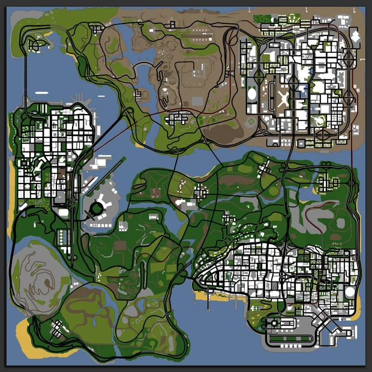

Grand Theft Auto: San Andreas
ENREDO
Depois de viver em Liberty City por cinco anos, Carl Johnson ("CJ") retorna a Los Santos em 1992 para o enterro de sua mãe. Lá, encontra tanto sua família quanto sua antiga gangue, a Grove Street Families, aos pedaços. Ao mesmo tempo que começa a acertar questões antigas com seus companheiros de gangue e luta contra as gangues rivais pelo controle de territórios dentro da cidade, Carl começa a trazer a Grove Street Families de volta ao topo. No entanto, às vésperas das Famílias conseguirem o controle de Los Santos, CJ descobre que seus melhores amigos, Big Smoke e Ryder estão trabalhando em conjunto com o oficial de polícia corrupto, Frank Tenpenny, líder da C.R.A.S.H. (Dublado por Samuel L. Jackson) para uma das gangues rivais, os Ballas. Smoke e Ryder montam uma cilada, para que a polícia prenda o irmão de Carl, Sweet. Tenpenny manda então a polícia prender Sweet e raptar Carl, que é deixado num lugar muito distante, numa área rural bem ao sul de San Andreas, Angel Pine. Ao perceber que Tenpenny é sua única esperança de ficar fora da cadeia e conseguir a liberação de Sweet, Carl se vê obrigado a cumprir as ordens do policial corrupto, que incluem matar e interferir com pessoas envolvidas num processo criminal contra o próprio Tenpenny.
Carl envolve com Catalina, prima de Cesar Vialpando, ela namora por aventura, ou seja, gosta de se arriscar assaltando bancos ou lojas, mas depois o larga para ficar com Claude.
Carl rapidamente conquista a amizade de novos aliados, entre eles Wu Zi Mu, tambem conhecido como Woozie, líder da San Fierro Triads, The Truth e Cesar Vialpando, que como CJ, foi traído por seus antigos companheiros. Carl e seus novos amigos abrem uma garagem em San Fierro, enquanto esperam por uma oportunidade de retornar para Los Santos. Se envolvem com Jizzy B., dono de uma boate: A cúpula do prazer, e as drogas. Após descobrirem que Jizzy estava se envolvendo com Big Smoke, Carl o mata. Carl descobre aonde encontrar Ryder e T-Bone Mendez, capanga de Jizzy, ele os mata no Pier 69.
Carl se envolve com os assuntos de um agente governamental misterioso, Mike Toreno, que deixa a entender que libertará Sweet se Carl o ajudar com suas operações secretas. Paralelamente, Carl ajuda Wu Zi Mu a promover o crescimento de um novo cassino em Las Venturas dominada pelos mafiosos. Eventualmente Carl encontra riqueza e eventualmente retorna a Los Santos. Toreno cumpre sua promessa de libertar Sweet, porém este, para a surpresa do irmão, se recusa a fazer parte do novo estilo de vida milionário de CJ, e insiste em retornar para seu território natal e fazer as GSF renascerem, do que sentar-se confortavelmente sobre os louros de Carl.
JOGO

San Andreas está estruturado de maneira similar aos dois jogos anteriores da série Grand Theft Auto. A parte central do jogo consiste de elementos de um jogo de corrida combinado com um third-person shooter, e um ambiente aberto e livre que permite ao jogador interagir e se locomover. A pé, o personagem controlado pelo jogador é capaz de andar, nadar e mergulhar (O primeiro jogo da série na qual isto é possível), escalar e pular, além de usar armas e se envolver em diversos tipos de combates manuais. Os jogadores também podem controlar diversos tipos de veículos, incluindo automóveis, caminhões, barcos, aviões, helicópteros, trens, tanque de guerra, motocicletas e bicicletas. O sistema de jogo aberto e não-linear permite aos jogadores explorar e escolher como desejam jogar o jogo exatamente. Embora as missões da trama sejam necessárias para o progresso através do jogo, e para destravar outras cidades (Todas áreas rurais; San Fierro; deserto e por último Las Venturas) e algum conteúdo do jogo, elas não são obrigatórias, e os jogadores podem completá-las quando quiser, e simplesmente vagar pelos territórios quando não as estiverem cumprindo. No entanto, criar muitos conflitos podem atrair atração indesejada - e potencialmente fatal - das autoridades; quanto mais caos causado, mais intensa a resposta: a polícia cuida das infrações menos graves, como ataque a transeuntes, apontar armas em locais públicos, roubo de carros, alguns assassinatos, enquanto equipes da SWAT, do FBI e até mesmo o exército americano respondem a distúrbios mais graves.
O jogador também pode participar de diversas missões opcionais; entre elas estão as tradicionais missões adicionais dos jogos anteriores, como dirigir um táxi e conduzir passageiros pela cidade, apagar incêndios com um carro de bombeiro, dirigir uma ambulância pela cidade e combater o crime, como justiceiro. Entre as novas adições estão missões onde o jogador pode desempenhar a função de ladrão de residência (Arrombamento) ou cafetão, fazer entregas de carga através de trens e caminhões, e frequentar auto escola; moto escola; escola náutica e especialização em aviação - onde ele ainda pode desenvolver sua habilidade em muitos dos veículos existentes no jogo.
Ao contrário de GTA Vice City e GTA III, que precisavam interromper o jogo para carregar mais dados sempre que o jogador se deslocava para distritos diferentes da cidade, o GTA: San Andreas não apresenta nenhum tipo de espera enquanto o jogador está se movimentando, já que seu mapa é muito maior que o dos jogos anteriores. As únicas cenas de carregamento no jogo são para ilustrar interlúdios ou antes de mostrar os interiores dos ambientes. Algumas outras diferenças entre o San Andreas e seus predecessores estão a possibilidade de multijogador nas chamadas missões Rampage, e a mudança dos 'pacotes secretos' dos antecessores por pichações, fotografias, ferraduras e ostras que podem ser feitas ou coletadas pelo jogador para desbloquear kits de armamentos, cada casa segura tem um conjunto diferente de "ferramentas".
Os controles de câmera, das lutas e do posicionamento do alvo das armas de fogo foram retrabalhados, de maneira a incorporar conceitos de outro jogo da Rockstar, Manhunt, incluindo diversos elementos de ações sigilosas, assim como miras melhoradas e um mostrador da saúde do personagem, que muda de cor verde para vermelho ou negro dependendo do seu estado. A versão para PC ainda implementou acordes de mouse; o jogador deve segurar o botão direito do mouse para ativar a mira, e então clicar ou segurar o botão esquerdo para atirar ou utilizar algum item, como uma câmera fotográfica.
MAPA
Diferente de alguns outros jogos da série, o Grand Theft Auto: San Andreas não se passa apenas em uma única cidade, mas sim em um vasto estado com impressionantes 24 quilômetros quadrados (24 Km²), tornando-se significativamente maior que outros mapas da franquia, sendo 4 vezes maior que Vice City e quase 3 vezes maior que Liberty City de GTA IV. O estado fictício de San Andreas, onde o jogo é ambientado, é composto por diversas cidades, áreas rurais e regiões únicas, cada uma com características próprias que oferecem uma imensa variedade de cenários, desafios e histórias, tornando o jogo não apenas uma aventura, mas uma verdadeira experiência de exploração e interação em um mundo detalhado e envolvente.
O GTA San Andreas se passa em San Andreas, um estado que é constituído por:
los santos
San Fierro
Las Venturas
Red County
Flint County
Tierra Robada